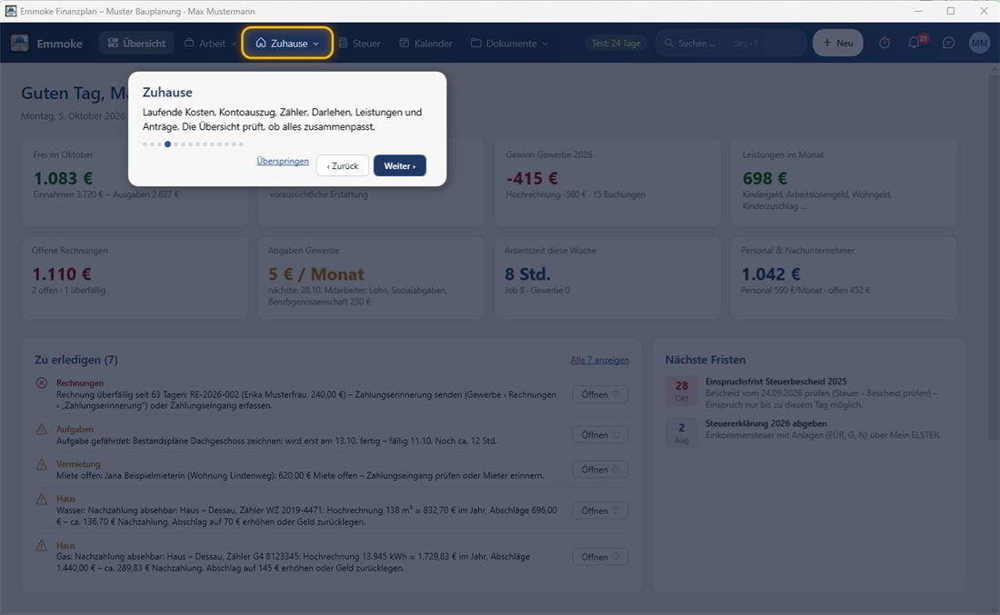
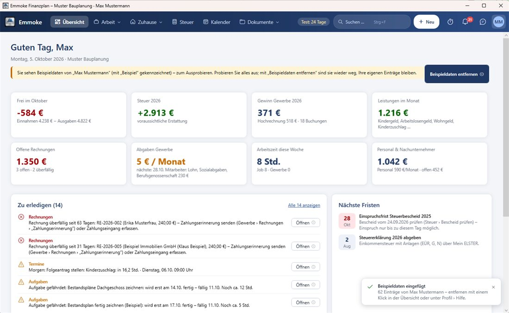
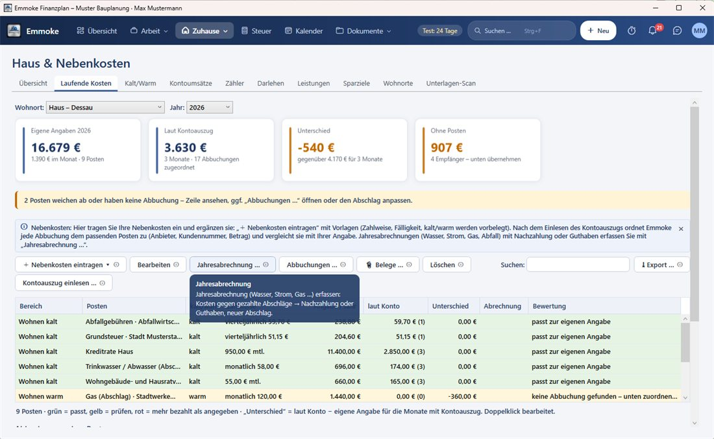
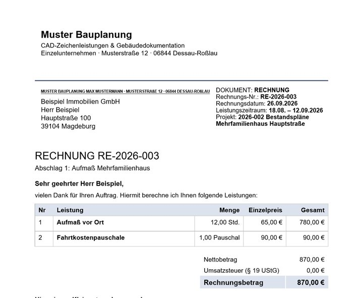
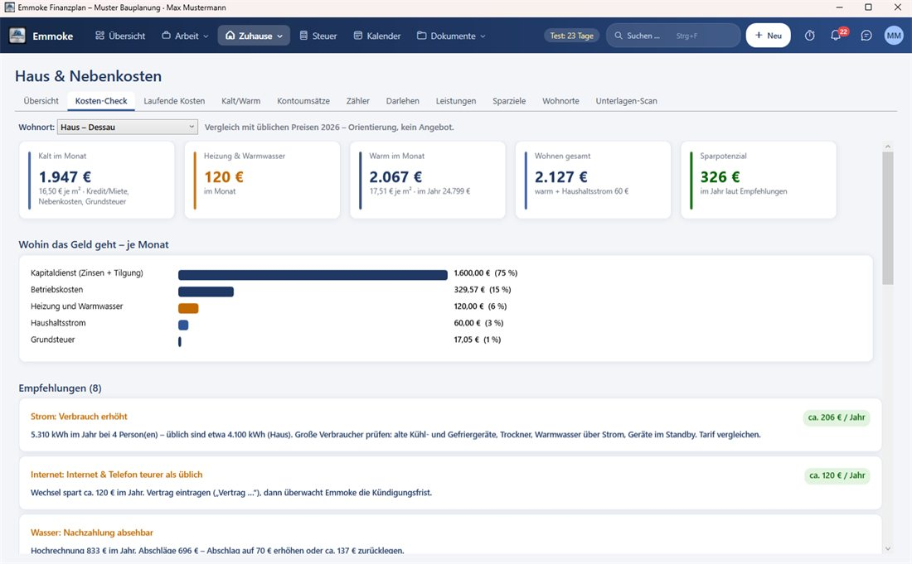
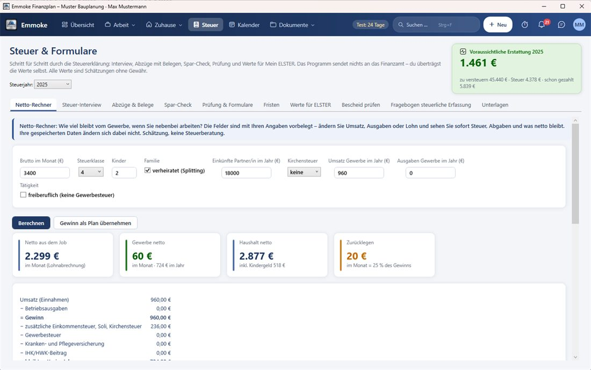
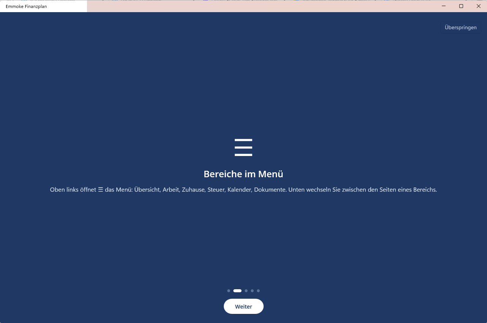

Guide
Emmoke step by step
Eight short steps from download to your first invoice – with pictures. Click a step on the left or “Next”. The program itself is in German; the German menu names are shown in bold. A tour on first start explains everything, and a small i on every button shows what it does.
1. Download and install
- On the home page choose “Download for Windows” and start the setup.
- For your phone: download and open the Android app. The iPhone app will come via TestFlight or the App Store once Apple has approved it.
- On first start set a password – your data is encrypted with it. Write down the recovery key (Wiederherstellungsschlüssel) and keep it safe.
2. Tour on first start
Emmoke shows you in two minutes where everything is: the program is dimmed, the explained area lights up yellow, next to it you read what it is for. “Weiter” goes to the next point, “Überspringen” ends the tour. Any time again: Profil › Hilfe › Rundgang starten.

3. Try it with the sample data of “Max Mustermann”
After the tour Emmoke offers sample data: customers, a quote, invoices, a house with running costs, bank transactions and appointments. So you see immediately how everything works together.
- Insert later: Profil › Hilfe › Beispieldaten einfügen (in the app: Einstellungen).
- Remove with one click: “Beispieldaten entfernen” at the top of the overview – your own entries stay.

4. Every button explains itself
Next to every button there is a small i. Move the mouse over it: a small window explains what the button does. In the app the i at the top right explains the page and all buttons. The symbols can be hidden under Profil › Hilfe.

5. Company data and first invoice
- Arbeit › Gewerbe › Übersicht: the guided start shows what is still missing – each with “Jetzt erledigen”.
- Enter your company data (address, tax number, bank) – it appears on every invoice.
- + Neu › Rechnung: choose a customer, enter items (also from the service catalogue).
- Festschreiben (finalise) and send by e-mail with PDF. Payment received? Bezahlt – the income automatically appears in the cash-basis accounting (EÜR).

6. Home: running costs and bank statement
- Zuhause › Laufende Kosten: “+ Nebenkosten eintragen” – templates for property tax, water, electricity, gas, insurance, car …
- Import your bank statement as CSV from online banking – Emmoke assigns every debit.
- Zuhause › Übersicht: the check shows what does not fit (with one-click correction), and the table shows where every number comes from.
- Zuhause › Kosten-Check: costs with and without heating, chart “where the money goes”, every tariff rated (cheap, usual, too expensive) with savings and “cancel by” date – plus recommendations and the buttons “Angebote vergleichen”, “Vertrag …” and “Kündigen …”.

7. Net calculator: what is left with job and side business?
Steuer › Netto-Rechner: enter gross salary, tax class, children and turnover/expenses of the business. You immediately see the net from your job, what the business earns after tax, the household net and how much you should set aside for taxes – with a table for other profits.

8. Connect phone and PC
- On the PC: Einstellungen › PC und Handy › choose OneDrive (or Google Drive) as the shared folder.
- In the app: “Mit Cloud-Datei verbinden” › OneDrive (iPhone: Files app › OneDrive or iCloud Drive) › folder “Emmoke Finanzplan” › tap daten.emmoke › password.
- Done: changes are synchronised automatically. The PC reports what was changed on the phone – also the next time you open it.
- The app contains the most important features of the PC program: work, staff, home with cost check, rentals, taxes, calendar, documents and assistant.

In detail: user manual (PDF, German) in the program under Profil › Hilfe and on the download page.